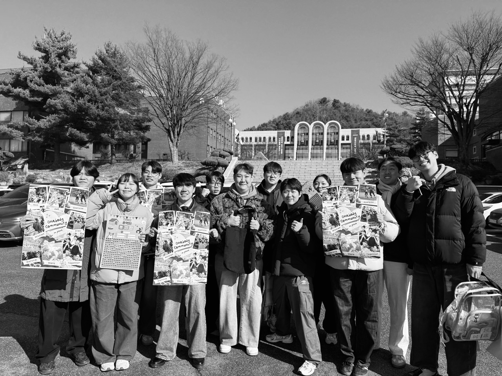
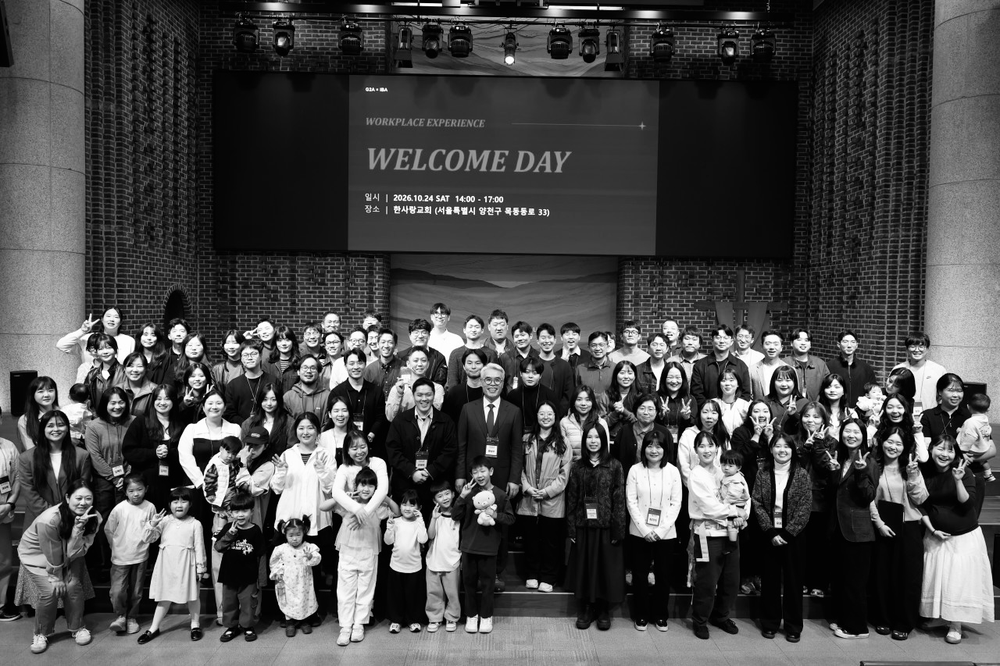

캠퍼스 커뮤니티
“우리는 대학이 바뀌면, 세상이 바뀐다고 믿습니다.”
2010년 예수님처럼 살고 싶다는 한 사람의 순종에서 시작되었습니다. 경쟁과 비교 속에 방향을 잃은 청년들에게 복음의 참된 안식을 전하고, 학과마다 작은 기도모임을 개척하며 세상으로 파송합니다.
캠퍼스 사역의 세 가지 축

캠퍼스 복음화
매주 캠퍼스에서 청년들을 만나 복음을 전하고 함께 식탁을 나눕니다. 각 학과에 2~3명이 모여 기도하는 작은 모임을 세워 캠퍼스 전체에 복음이 흘러가는 움직임을 만듭니다.
캠퍼스 정기모임
우리는 캠퍼스에서 함께 성장하고, 서로의 삶에 동행하는 공동체를 세우며 교회와 사회와 가정까지 선한 영향력을 확장해갑니다.
캠퍼스 전도모임
매주 캠퍼스에서 다양한 청년들을 만나 가볍게 참여하는 활동과 대화를 나누며 자연스럽게 관계를 맺고, 사랑의 이야기를 전합니다.

비즈니스 선교훈련
캠퍼스 4년, 일터 40년. 대학 시절부터 일터 현장의 사람들을 만나며, 자신의 일과 비즈니스를 통해 하나님 나라의 운동에 참여하도록 훈련합니다.
비즈니스 스터디
성경적 가치관을 바탕으로 일과 삶을 다시 바라보고, 직장과 일상 속에서 하나님의 부르심에 합당한 삶을 살도록 돕는 훈련입니다. 일, 돈, 리더십, 관계, 비전 등 현실적인 주제들을 통해 자신의 일터를 신앙의 관점으로 연결하도록 돕습니다.

유학생 & 이주민 사역
한국에서 공부하고 일하는 외국인 청년들에게 먼저 다가가 친구가 됩니다. 비타500 나눔과 식탁 교제로 환대하며 그리스도의 몸 된 공동체로 초대합니다.
이주민 커뮤니티
이주민 커뮤니티는 한국에서 외롭고 소외된 이주민들에게 먼저 다가가 친구가 되어주고, 사랑과 환대를 통해 예수 그리스도의 몸으로 초대하는 공동체입니다.
우리는 하나님께서 열방을 우리의 이웃으로 보내셨다고 믿으며, 한 사람의 삶을 끝까지 함께 하고 자립과 회복까지 돕는 진정한 친구가 되고자 합니다.
이주민 커뮤니티는 우리에게 다가온 사람들을 환대하고 사랑을 베푸는 친구 공동체입니다.
우리가 함께 하는 것
안식 컨퍼런스
원바디 안식 컨퍼런스는 공동체가 일상을 멈추고 하나님이 창조하신 자연 속에서 함께 쉼과 예배, 교제와 축제를 누리며 몸과 마음과 영혼의 회복을 경험하는 3박 4일의 여정입니다.
이 컨퍼런스는 안식을 하나님의 선물로 받아들이며 하나님께 순종하는 공동체적 결단 가운데, 서로의 이야기를 나누고 하나님의 뜻을 함께 발견하며 하나님과 공동체와의 친밀함을 깊이 세워가는 시간입니다.
평화와 화해를 향한 여정
평화와 화해를 향한 여정은 갈등과 분열이 가득한 이 시대에 평화와 화해를 회복하고자 선한 영향력을 끼쳤던 역사적 인물들의 기념관을 탐방하며 사랑과 이해를 배워가는 청년들의 여정입니다.
“우리는 대학이 바뀌면, 세상이 바뀐다고 믿습니다.”
원바디 커뮤니티의 Campus Mission은 매주 캠퍼스에서 청년들을 만나 복음을 전하고, 함께 삶을 나누며 예수님의 제자로 세워갑니다. 한 사람을 공동체 안에서 세워 캠퍼스에서 세상으로 보냅니다.
1. 캠퍼스 복음화: 한 사람에게 복음을 전하고 예수님의 제자로 함께 살아갑니다. 각 학과에 기도모임을 세우고 연결하여, 캠퍼스 전체에 복음이 흘러가는 움직임을 만들어갑니다.
2. 비즈니스 선교훈련: 캠퍼스 4년, 일터 40년. 캠퍼스에서부터 실제 일터와 비즈니스 현장의 사람들을 만나며, 자신의 일과 비즈니스를 통해 하나님 나라의 운동에 참여하도록 훈련합니다.
여러분의 후원은 캠퍼스에서 한 사람을 만나 복음을 전하고, 공동체 안에서 제자로 세워 세상으로 보내는 사역에 사용됩니다.
매월 1만 원으로 함께할 500명의 동역자를 초대합니다.
여러분의 동역으로 캠퍼스의 한 사람을 만나고 세상으로 보내는 사역을 계속 이어갈 수 있습니다.